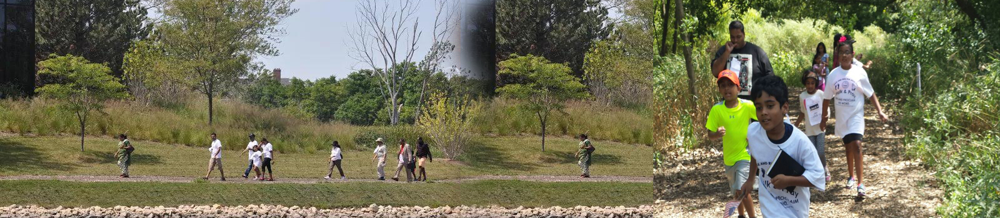

 I’ve often heard people say you discover who you really are during a journey. I think there’s a lot of truth to that. For example how many people who say they are going to run a marathon actually run it? A large percentage will buy the running shoes. A smaller number will actually use the running shoes and an even smaller number will use those running shoes on the big day. For those who make it to game day with their new shoes, they will have discovered their true potential. They will have woken up early in the morning to practice while others slept in. While some decided to stay at home where it’s much warmer, others will
have braved the brisk weather. Some will fight through aches and pains but others will give in to their pain and forget the marathon. Once the actual marathon takes place the runner who has practiced for weeks will think about the early mornings, the cold temperatures, and the aches and pains. As the runner reaches the finish line, she will think about her inner strengths. She will have discovered that in her journey she can do anything she sets her mind to.
I’ve often heard people say you discover who you really are during a journey. I think there’s a lot of truth to that. For example how many people who say they are going to run a marathon actually run it? A large percentage will buy the running shoes. A smaller number will actually use the running shoes and an even smaller number will use those running shoes on the big day. For those who make it to game day with their new shoes, they will have discovered their true potential. They will have woken up early in the morning to practice while others slept in. While some decided to stay at home where it’s much warmer, others will
have braved the brisk weather. Some will fight through aches and pains but others will give in to their pain and forget the marathon. Once the actual marathon takes place the runner who has practiced for weeks will think about the early mornings, the cold temperatures, and the aches and pains. As the runner reaches the finish line, she will think about her inner strengths. She will have discovered that in her journey she can do anything she sets her mind to.
 Our spiritual journey is not much different. As Christians we know where our journey begins and ends. It began in heaven when God breathed life into dust and fashioned us in His image. If we choose to live according to the life He asks us to live we know our ultimate destination. We return right back to Him. However life gets in the way of our journey and we experience what I like to call spiritual turbulence which throws us way off course. A perfect example would be a young shepherd named David whom God selected to be the next king of Israel. He did not know that this would be his journey. His young age, body type, and occupation were certainly atypical of a man becoming a king but over the course of time, David would risk his life before a giant, a moody king, and foreign armies. Though God continued to provide Him with success, David withered in his own personal turbulence. He gave into sexual temptation with a married woman and killed her husband in order to clear his conscience. As a result David would lose the child borne out of the temptation and go through a period of loneliness, sorrow, and self-reflection before he sought God. 2 Samuel 12:13 says David tells Nathan the prophet “I have sinned against the Lord” for which Nathan responds “The Lord has taken away your sin. You are not going to die.” In a matter of minutes David’s destination changed. I would think that as David reflected on his life he would think about his battles, his sin, and his redemption.
Our spiritual journey is not much different. As Christians we know where our journey begins and ends. It began in heaven when God breathed life into dust and fashioned us in His image. If we choose to live according to the life He asks us to live we know our ultimate destination. We return right back to Him. However life gets in the way of our journey and we experience what I like to call spiritual turbulence which throws us way off course. A perfect example would be a young shepherd named David whom God selected to be the next king of Israel. He did not know that this would be his journey. His young age, body type, and occupation were certainly atypical of a man becoming a king but over the course of time, David would risk his life before a giant, a moody king, and foreign armies. Though God continued to provide Him with success, David withered in his own personal turbulence. He gave into sexual temptation with a married woman and killed her husband in order to clear his conscience. As a result David would lose the child borne out of the temptation and go through a period of loneliness, sorrow, and self-reflection before he sought God. 2 Samuel 12:13 says David tells Nathan the prophet “I have sinned against the Lord” for which Nathan responds “The Lord has taken away your sin. You are not going to die.” In a matter of minutes David’s destination changed. I would think that as David reflected on his life he would think about his battles, his sin, and his redemption.
We too on our earthly journey reach moments where we take the paths more widely traveled. This means giving into our human weaknesses rather than trusting in God but 1 Corinthians 10:13 says “No temptation has overtaken you except what is common to mankind. And God is faithful; He will not let you be tempted beyond what you can bear. But when you are tempted, He will also provide a way out so that you can endure it.” So even when we are wayward there is a way out. The Christian life is about these seasons on the journey. However we can’t understand God’s plan for our life if we don’t experience the emotions we would rather pass on. I think about those who battle addictions and the struggles they face as they fight their temptation. Once they’ve been able to resist the temptation they realize their inner strength and that they are capable of so much more than what was taken from them during the days of addiction.
As Christians we know where our journey ends. It’s where we will once again join our Creator who will say the words well done my good and faithful servant! That is what we are training for. So don’t sit on the sidelines in preparing for this marathon, put on your running shoes and run towards Jesus!
God bless you on this journey we call life.